توريد وتركيب العشب الجداري في المملكة العربية السعودية
نقدم خدمة تركيب العشب الصناعي على أعلى تقدم مؤسسة مشتلي لاند سكيب خدمة تركيب العشب الجداري الطبيعي والصناعي على أعلى مستوى لكل عملائها؛ حيث أنها توفر نوعين أساسيين من العشب الجداري الصناعي والحاصل على شهادات الجودة المعتمدة من مختلف المنظمات؛ فقد تم تصنيعه وفقًا للمواصفات القياسية، كما أنه يمتاز بشكله الرائع والذي يجعل منه قطعة ديكور ثمينة تُزيد من قيمة المكان الذي يُركب فيه، ويمتاز بسهولة تنظيفه وسهولة التعامل معه فلا يحتاج سوى التمشيط، وتوفر أنواع مختلفة من العشب الجداري الطبيعي من أهمها النباتات المتسلقة والتي يتم زراعتها بنمط معين، حتى تنمو في اتجاه الجدار المُراد تركيب العشب الجداري عليه بمنظر أكثر من رائع، وتُقدم الشركة خدمة تركيب العشب الجداري بأسعار رائعة تنافس بها جميع الشركات الأخرى، وتعتمد مؤسسة على الأفكار الرائعة والحديثة في تركيب العشب الجداري لتزيين المنازل، والقصور، والفلل من الداخل أو لتزيين الحدائق، أو التراس أو الأسطح بناءً على رغبة العميل.
 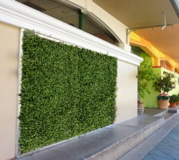
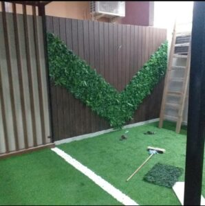
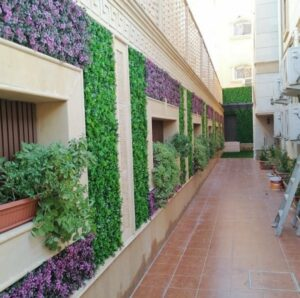
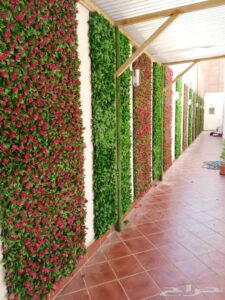
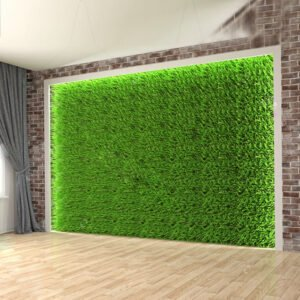
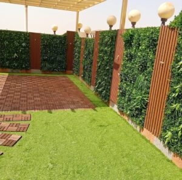
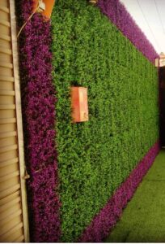
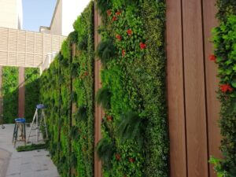
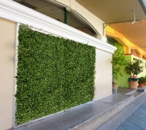
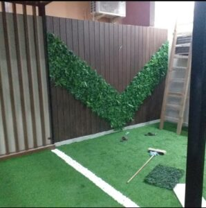
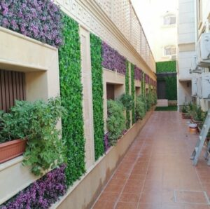
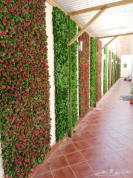
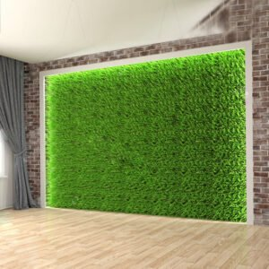
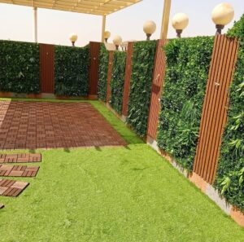
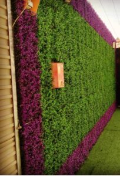
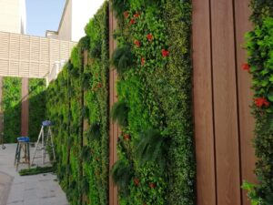